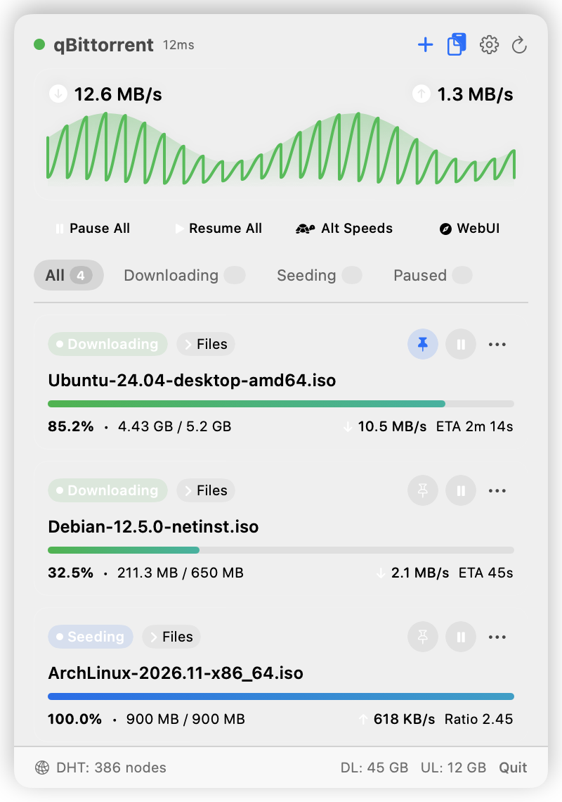
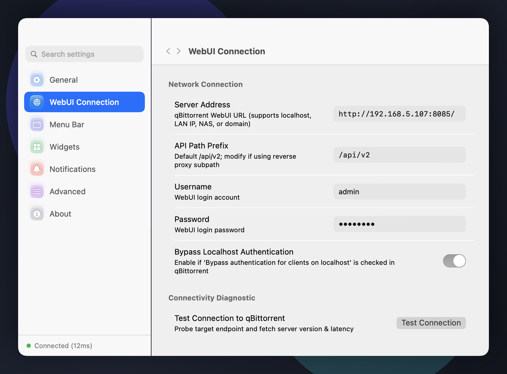
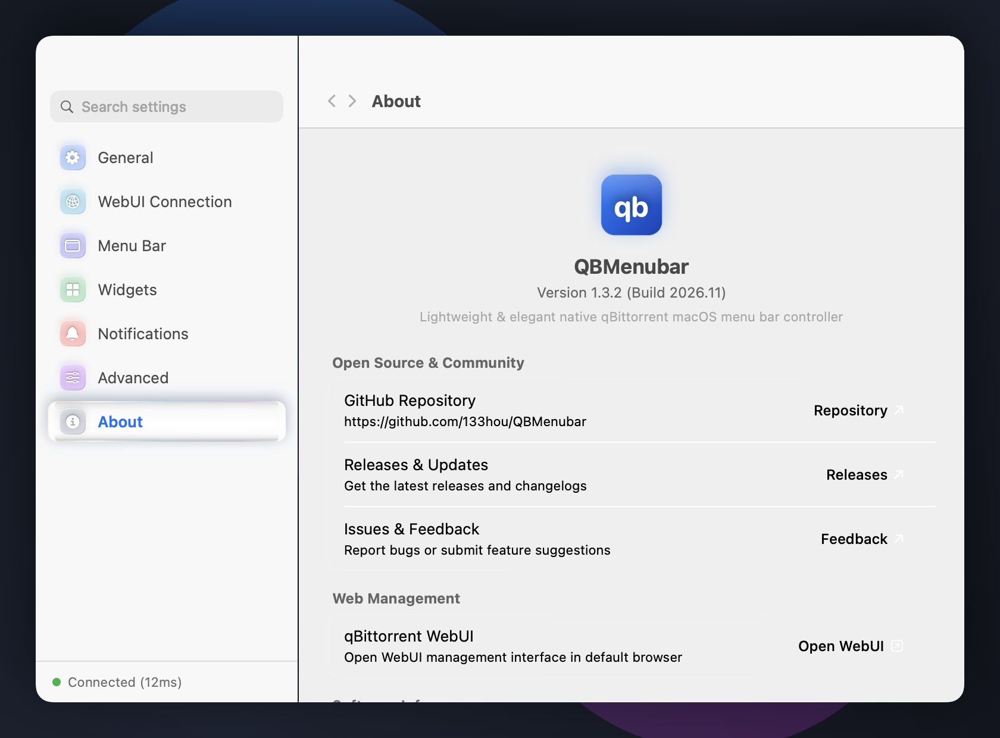
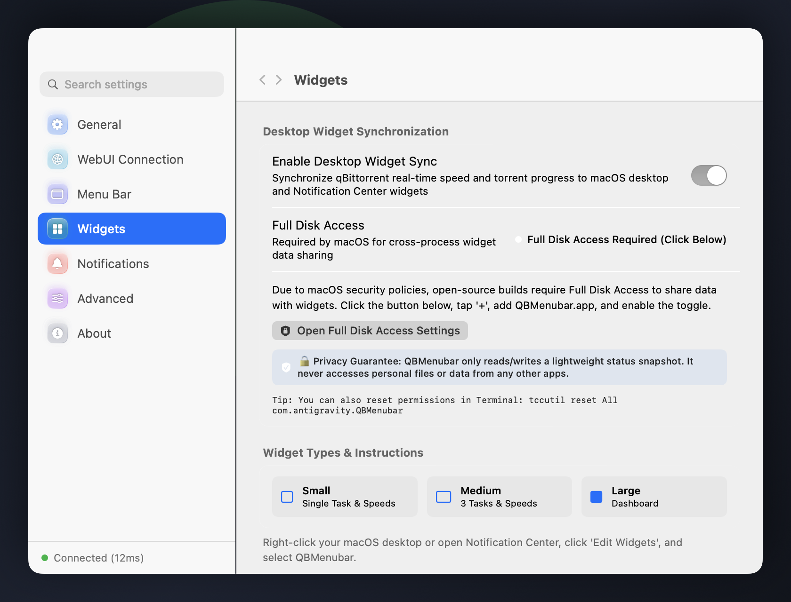

qBittorrent & Transmission Native macOS Menu Bar App & Desktop Widgets 原生 macOS qBittorrent & Transmission 状态栏监控与 桌面小组件客户端
The ultimate lightweight BitTorrent client & Transgui alternative for Mac. Engineered in pure Swift 6 + SwiftUI with Apple Liquid Glass aesthetics, glanceable WidgetKit desktop widgets, and under 40 MB memory footprint. 专为 Mac 打造的原生 qBittorrent 菜单栏客户端与 Transmission 远程管理工具（Transgui 现代替代方案）。基于纯 Swift 6 + SwiftUI 深度工程化构建，融合 Liquid Glass 液态玻璃美学与 WidgetKit 桌面小组件，静默常驻仅占 ~40 MB 内存与 <0.1% CPU。



Monitor Downloads Right From Your Desktop 桌面小组件即时监控，无需打开浏览器
Powered by native Apple WidgetKit with zero permission requirements, no Full Disk Access, and smart battery budget throttling. Choose your favorite visual style. 基于苹果原生 WidgetKit 框架打造，零系统敏感权限（无需完全磁盘访问权限），智能能耗调度不耗电。提供两种精心雕琢的视觉风格随心切换。

Everything You Need. Zero Fluff. 功能全景：强大且克制的原生体验
Designed specifically for power users, home lab enthusiasts, and PT seedbox owners who demand instantaneous responsiveness and zero battery waste. 专为 Mac 重度用户、NAS 玩家、家庭私有云与 PT 站保种达人定制，兼顾极速响应与极致省电。
Dual Client: qBittorrent & Transmission 双客户端引擎：qBittorrent + Transmission
Switch between qBittorrent WebUI (API v2) and Transmission JSON-RPC with one click. Seamlessly connects to local Mac, Synology DSM, fnOS, QNAP, Unraid, TrueNAS, and Docker. 一键无缝切换 qBittorrent WebUI（API v2）与 Transmission JSON-RPC 协议。支持本地 Mac、群晖 NAS、飞牛私有云、威联通、Unraid、TrueNAS 与 Docker 容器。
Menu Bar Progress Pinning 状态栏任务图钉置顶
Pin any critical torrent's download percentage and live speed directly next to your macOS menu bar clock (e.g. ↓ 12.0 MB/s 85%). Perfect for PT seedbox monitoring.
点击卡片图钉，将关键任务下载进度百分比与实时网速直接固定到屏幕顶部状态栏（如 ↓ 12.0 MB/s 85%），PT 高速抢首发一目了然。
Live Speed Waveform & Turtle Mode 平滑网速波形图与一键限速
Real-time upload and download waveforms powered by Apple Swift Charts. One-click pause/resume all torrents or toggle Turtle Mode (🐢 alternate limits) during Zoom calls or gaming. 基于 Apple Swift Charts 原生渲染平滑物理波形图。支持一键暂停/恢复全部任务，或快速开启备用限速（🐢 小乌龟模式），开会打游戏不再被抢占带宽。
File Tree Inspection & Sniffer 交互式文件树与磁力智能嗅探
Expand any card to inspect individual files with dedicated filetype icons. Auto-sniffs clipboard magnet links (magnet:?xt=) and parses local .torrent metadata before downloading.
展开任意任务卡片即可查看完整文件目录树与单文件下载进度。剪贴板自动嗅探磁力链接，并支持上传 .torrent 文件预先勾选文件与设定路径。
macOS Keychain Security & Privacy 系统级钥匙串加密与隐私安全
WebUI passwords are encrypted in native Apple Keychain Services (kSecClassGenericPassword). Zero plaintext password storage, zero tracking telemetry, and no sandboxing bypasses.
WebUI 连接密码直接存储在苹果原生 macOS Keychain（钥匙串） 中，受系统级加密保护。绝无明文存储、零数据采集，零敏感文件权限穿透。
9 Languages & Resizable Window 9 国语言与可拉伸交互窗口
Full native localization in English, 中文, 日本語, 한국어, Deutsch, Français, Español, and Русский. Bottom drag handle smoothly stretches popover height between 380pt and 920pt. 原生内置英、中（简/繁）、日、韩、德、法、西、俄 9 国语言。底部正中央原生把手支持在 380pt ~ 920pt 之间自由拖拽拉伸窗口高度并自动记忆。
Why QBMenubar Beats the Rest 为什么选择 QBMenubar？
See how QBMenubar compares against traditional browser WebUIs, bloated Qt desktop clients, and legacy Transgui utilities. 告别沉重的浏览器标签页与多年未更新的陈旧工具，体验纯粹的现代 macOS 原生应用。
| Dimension / Metric 功能与指标维度 | QBMenubar (Native Mac) QBMenubar (Mac 原生应用) | Browser WebUI 浏览器网页端 WebUI | Official Qt Desktop Client 官方 Qt 桌面客户端 | Transgui / Script Plugins Transgui / 脚本插件 |
|---|---|---|---|---|
| Dual Client Engine 双客户端引擎 | ✅ qBittorrent & Transmission | ❌ Single client only | ❌ qBittorrent only | ⚠️ Legacy / unmaintained |
| Menu Bar Resident 状态栏常驻与交互 | ✅ Native Liquid Glass | ❌ Web page only | ❌ Dock / Separate window | ⚠️ Plain text dropdown |
| Pinned Torrent Progress 菜单栏图钉任务进度 | ✅ Direct Status Bar Badge | ❌ | ❌ | ❌ |
| Real-Time Speed Waveform 实时动态网速波形图 | ✅ Swift Charts Physics Wave | ⚠️ Static update graph | ⚠️ Basic graph | ❌ |
| Stretchable Window Height 可拉伸交互窗口高度 | ✅ Interactive Drag (380–920pt) | ⚠️ Browser window | ⚠️ Cluttered Qt window | ❌ Fixed menu |
| Memory Consumption 运行时内存占用 | 🟢 ~35 – 45 MB | 🔴 300 MB – 1 GB+ | 🟡 150 MB – 300 MB | 🟢 ~30 MB |
| Idle CPU Usage 后台空闲 CPU 占用 | 🟢 < 0.1% | 🟡 1% – 5% | 🟡 1% – 3% | 🟡 1% – 2% |
| Remote NAS & Docker Support 远程 NAS / Docker 连接 | ✅ Local, LAN, DDNS & HTTPS | ✅ | ❌ Local daemon only | ⚠️ Limited reverse proxy |
| Interactive File Tree Preview 交互式文件树穿透展开 | ✅ In-card interactive tree | ⚠️ Multi-click table | ⚠️ Dense table | ❌ |
| Desktop Widgets (WidgetKit) 桌面与通知中心小组件 | ✅ Small, Medium & Large | ❌ | ❌ | ❌ |
| macOS Native Notifications macOS 原生系统通知推送 | ✅ Download complete notification | ⚠️ Browser permission needed | ⚠️ Legacy dialog | ❌ |
| Apple Silicon Architecture Apple Silicon 原生架构 | ✅ Pure Swift 6 Universal | ⚠️ Chromium web process | 🟡 Fat Qt / Rosetta | ⚠️ Script dependent |
Connect in Seconds 简单两步，开箱即用
Choose your BitTorrent daemon backend below for straightforward step-by-step connection instructions: 选择您使用的下载器内核，按照简明指引快速建立连接：
Enable WebUI in qBittorrent 在 qBittorrent 中开启 WebUI
Open qBittorrent Preferences -> Web UI, check "Web User Interface (Remote control)" (default port: 8080).
打开 qBittorrent -> 偏好设置 -> Web UI，勾选 「Web 用户界面 (远程控制)」（默认端口为 8080）。
Connect in QBMenubar 在 QBMenubar 中完成连接
Open QBMenubar Settings (⌘,) -> WebUI Connection, choose qBittorrent, confirm http://127.0.0.1:8080 (or your remote NAS IP), enter credentials, and click Test Connection.
打开 QBMenubar 设置 (⌘,) -> WebUI 连接，选择 qBittorrent，确认地址为 http://127.0.0.1:8080（或填入群晖/远程 NAS 地址），输入账户密码并点击 「测试连接」 即可。
Enable RPC in Transmission 在 Transmission 中开启远程访问
In Transmission, open Preferences -> Remote and check "Enable remote access" (default port: 9091).
打开 Transmission -> 偏好设置 -> 远程 (Remote)，勾选 「启用远程访问」（默认端口为 9091）。
Connect in QBMenubar 在 QBMenubar 中完成连接
Open QBMenubar Settings (⌘,) -> WebUI Connection, switch Client Type to Transmission. Address automatically presets to http://127.0.0.1:9091 and /transmission/rpc. Click Test Connection!
打开 QBMenubar 设置 (⌘,) -> WebUI 连接，客户端切换为 Transmission，系统自动预设 http://127.0.0.1:9091 与 /transmission/rpc，输入密码后点击 「测试连接」 即可！
If macOS displays "cannot be opened because Apple cannot check it for malicious software" (standard for unsigned open-source binaries): Right-click QBMenubar.app in Finder -> select Open -> click Open. Or copy and execute this single Terminal command:
开源软件首次打开时，macOS 可能会弹出 “无法打开，因为无法验证开发者” 拦截提示。解决方法：在访达「应用程序」中 右键点击 QBMenubar.app -> 选择打开 -> 点击打开。或直接在终端执行以下解除隔离属性命令：
xattr -cr /Applications/QBMenubar.app
Frequently Asked Questions 关于 QBMenubar 的一切疑问
Find quick answers to common questions about features, remote NAS setup, security, and desktop widgets. 在此查找有关客户端连接、远程 NAS 配置、密码安全以及桌面小组件的详尽解答。
1. Is QBMenubar a good alternative to Transmission Remote GUI (Transgui) on macOS? 1. QBMenubar 可以作为 macOS 上 Transmission Remote GUI (Transgui) 的现代替代品吗？
Yes, absolutely. While Transmission Remote GUI (Transgui) was historically popular, it was built with legacy Pascal/Lazarus frameworks, lacks modern macOS UI integration, and does not support Apple Silicon natively. QBMenubar is built from scratch in Swift 6 for Apple Silicon and Intel Macs. It supports both Transmission and qBittorrent, features modern macOS Liquid Glass aesthetics, lives unobtrusively in your menu bar, provides native macOS Desktop Widgets, and consumes virtually zero CPU (<0.1%) and RAM (~40MB).
是的，完全可以并且体验显著提升。传统的 Transmission Remote GUI (Transgui) 基于古老的 Pascal/Lazarus 框架，多年疏于维护，UI 风格陈旧且无法良好适配 Apple Silicon 芯片与高分屏。QBMenubar 专为现代 macOS 与 Apple Silicon 原生打造，采用纯 Swift 6 + SwiftUI 编写，不仅完美支持 Transmission JSON-RPC 与 qBittorrent 双客户端，还提供现代毛玻璃菜单栏面板、桌面小组件、图钉置顶与波形图，内存仅占 ~40MB，是当前 macOS 上极具现代化体验的替代方案。
2. How does QBMenubar store my WebUI password securely? 2. QBMenubar 如何保障我的 WebUI 连接密码安全？
Your credentials are encrypted and stored in the secure macOS Keychain using Apple's native Security framework (kSecClassGenericPassword). Passwords are never saved in plaintext in UserDefaults, preferences plists, or exported configuration files. When connecting to your WebUI, credentials are retrieved from the Keychain into memory only for authentication requests.
您的连接密码直接保存在苹果原生的 macOS Keychain（钥匙串） 中，受系统级加密保护。应用绝不会将密码明文写入 UserDefaults 或本地配置文件，在与 WebUI 建立连接时才会即时从钥匙串读取至安全内存，安全可靠。
3. Can I use QBMenubar with both qBittorrent and Transmission? 3. QBMenubar 支持同时连接或切换 qBittorrent 与 Transmission 吗？
Yes! QBMenubar features a unified client abstraction architecture. Simply select either qBittorrent or Transmission in Settings -> WebUI Connection. All status bar speeds, popover cards, speed waveforms, and desktop widgets seamlessly support both backends.
是的！QBMenubar 具备统一的服务抽象层。您只需在「设置 -> WebUI 连接」中选择 qBittorrent 或 Transmission，菜单栏实时速率、展开卡片、折线图与桌面小组件均全面无缝兼容。
4. How do I monitor a remote Synology, fnOS, QNAP, Unraid, TrueNAS, or Docker container? 4. 如何连接群晖 Synology、飞牛 fnOS、威联通 QNAP、Unraid、TrueNAS 或 Docker 中的下载器？
Enter your remote device's IP address (e.g. http://192.168.1.100:8080 or http://nas.local:9091), domain name, or HTTPS reverse proxy URL in the Server Address field. QBMenubar works flawlessly across LAN, VPN (Tailscale, WireGuard), and WAN reverse proxies with subpaths.
只需在「服务器地址」一栏填入 NAS 的局域网 IP（例如 http://192.168.1.100:8080 或 http://nas.local:9091）、自定义域名或 HTTPS 反向代理地址即可。QBMenubar 原生支持反向代理子路径与基础认证。
5. How do I add Desktop Widgets in macOS Sonoma, Sequoia, and Tahoe? 5. 如何在 macOS Sonoma、Sequoia 或 Tahoe 桌面添加小组件？
Right-click any empty space on your macOS desktop (or open Notification Center and click Edit Widgets at the bottom), search for QBMenubar, and drag your preferred widget size (Small, Medium, or Large) onto your desktop. You can choose between the Liquid Glass circular ring and classic linear capsule bar in Preferences. No Full Disk Access or special permissions are required.
在 Mac 桌面空白处右键点击「编辑小组件」（或在通知中心底部点击），搜索 QBMenubar，即可将小（Small）、中（Medium）或大（Large）规格的小组件拖至桌面或通知中心。您还可以在设置中自由选择液态玻璃环形圈或经典横向胶囊条样式，完全无需授予任何特殊系统权限。
6. Why does QBMenubar use under 40 MB of RAM while browser tabs use hundreds of MB? 6. 为什么 QBMenubar 的内存占用只有 40MB，而网页端占用几百 MB？
QBMenubar is 100% natively compiled in pure Swift 6 and SwiftUI with zero web view engines, zero Chromium runtimes, and zero JavaScript overhead. It communicates with your backend via lightweight JSON/REST/RPC requests, using virtually zero CPU (<0.1%) when idle.
QBMenubar 采用纯原生 Swift 6 + SwiftUI 开发，零内嵌网页、零 Chromium/Electron 臃肿运行时，直接以原生网络协议并发调度，空闲时 CPU 占用近乎为零（<0.1%），极其节能省电。
7. Can I resize or stretch the menu bar popover window? 7. 菜单栏弹出的控制窗口可以拉长放大吗？
Yes! Grab the subtle capsule handle at the very bottom center of the popover window and drag it up or down to adjust the height anywhere between 380pt and 920pt. Your custom height is remembered automatically, and double-clicking the handle snaps it back to the default height.
完全可以！点击菜单栏弹出面板后，将鼠标移至面板最底部正中央的原生拖拽把手，鼠标变为上下箭头后即可在 380pt ~ 920pt 之间任意拖拽拉伸窗口高度。高度会自动记住，双击把手可一键平滑弹回默认 550pt 高度。